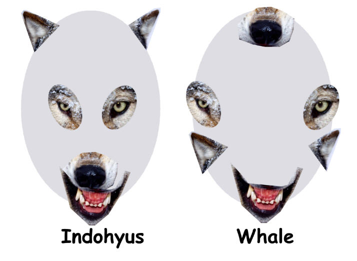
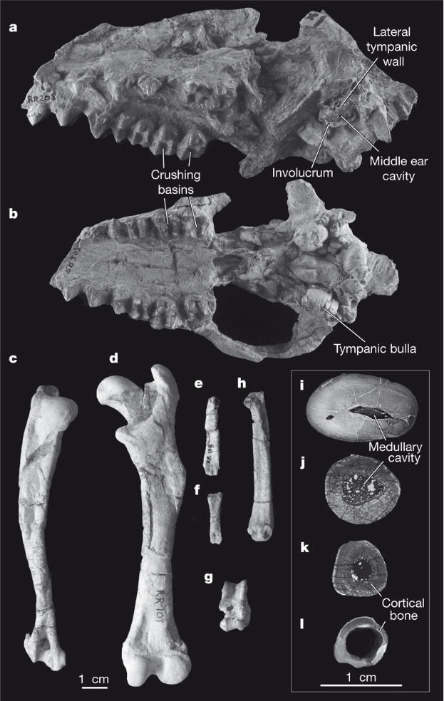

How foolish it is of us not to see the similarity between Indohyus and a whale!
How foolish it is of us not to see the similarity between Indohyus and a whale!| Evolution in the News - January 2008 |
| by Do-While Jones |
Here's another new fable about the ancestry of whales.
The December 20, 2007, issue of Nature contained an article claiming that "Whales originated from aquatic artiodactyls in the Eocene epoch of India." The story must have been spoon-fed to certain reporters in advance because several people sent us links to various news stories about the article before we received our issue of Nature in the mail. We aren't convinced that those reporters read or understood the Nature article. They simply reported it as new proof of evolution.
We have previously explained the problems evolutionists have with whale evolution. 1, 2, 3, 4. Here is a summary of the evolutionists' problem in the words of an evolutionist.
|
Phylogenetic analyses of molecular data on extant animals strongly support the notion that hippopotamids are the closest relatives of cetaceans (whales, dolphins and porpoises). In spite of this, it is unlikely that the two groups are closely related when extant and extinct artiodactyls are analysed, for the simple reason that cetaceans originated about 50 million years (Myr) ago in south Asia, whereas the family Hippopotamidae is only 15 Myr old, and the first hippopotamids to be recorded in Asia are only 6 Myr old. However, analyses of fossil clades have not resolved the issue of cetacean relations. Proposed sister groups ranged from the entire artiodactyl order, to the extinct early ungulates mesonychians, to an anthracotheroid clade (which included hippopotamids), to weakly supporting hippopotamids (to the exclusion of anthracotheres). 5 |
Let's translate that paragraph into plain English. The DNA of whales is most like the DNA of hippos. Therefore, the molecular biologists say whales must have evolved from an early hippopotamus. Paleontologists don't buy that argument because they think the oldest whale fossils are 50 million years old, and the oldest hippo fossils are just 15 million years old. If whales preceded hippos by 35 million years, they could not have evolved from them. But the fossil record has "not resolved the issue of cetacean relations" either. So, there are several different proposed whale ancestors.
This new study supposedly solves all the problems. We were somewhat confused, however, by this summary of the article, written by the editor of Nature.
|
The first ten million years of whale evolution are well documented in the fossil record, but their emergence from their terrestrial ancestors remains obscure. A new study points to the raoellids -- small, primitive even-toed ungulates (artiodactyls) from India -- as the closest known relatives of the early whales. The raoellid Indohyus is similar to whales, and unlike other artiodactyls, in the structure of its ears and premolars, in the thickness of its bones and in the isotopic composition of its teeth. These indicators suggest that this raccoon-sized creature spent much of its time in water. Typical raoellids, though, had a very un-whale-like diet, suggesting that the spur to take to the water may have been dietary change, rather than the lure of the aquatic habit per se. 6 |
Presumably the first 10 million years of whale evolution would consist primarily of the evolution from land to water. If those 10 million years are so well documented, why is their origin still obscure? Apparently the phrase "well documented" means different things to different people. Indohyus is similar to whales in the shape of its premolars (teeth), but its diet (which is generally inferred from the shape of the teeth) was "very un-whale-like." The thinking process of the editor of Nature apparently goes something like this: Spending time in the water will make a land animal more fishlike; the reason to spend more time in the water is to get more food; therefore, it must have acquired a taste for seafood, which made it evolve into a whale.
What is it about the Indohyus skull that makes it like a whale? Well, there are certain similarities.
|
Indohyus shares with cetaceans several synapomorphies that are not present in other artiodactyls. Most significantly, Indohyus has a thickened medial lip of its auditory bulla, the involucrum (Figs 1 and 3), a feature previously thought to be present exclusively in cetaceans. Involucrum size varies among cetaceans, but the relative thickness of medial and lateral walls of the tympanic of Indohyus is clearly within the range of that of cetaceans and is well outside the range of other cetartiodactyls (Fig. 3). Other significant derived similarities between Indohyus and cetaceans include the anteroposterior arrangement of incisors in the jaw, and the high crowns in the posterior premolars. 7 |
We should point out there are some differences that we think are significant. Indohyus has a nose at the front of its skull, near its mouth. Whales have their noses at the back of their skulls. Indohyus has closely set eyes in the center of its face. Whales have eyes on the sides of their heads. Indohyus has ears on the top of its skull. Whales have ears on the sides of their skulls. The differences are clearly shown below.
 |
|---|
But what are those differences compared to the relative thickness of medial and lateral walls of the tympanic? How foolish it is of us not to see the similarity between Indohyus and a whale!
All kidding aside, here are the bones they analyzed:
 |
|---|
The fossils consist of a skull and a few pieces of leg bones. What would make anyone believe these bones have anything to do with a whale? Well, here's their argument:
|
All fossil and recent cetaceans differ from most other mammals in the reduction of crushing basins on their teeth: there are no trigonid and talonid basins in the lower molars, and the trigon basin of the upper molars is very small (for example in pakicetids and ambulocetids) or absent. Crushing basins are large in raoellids (Fig. 1a, b) and other basal ungulates. This implies that a major change in dental function occurred at the origin of cetaceans, probably related to dietary change at the origin. 8 |
Their conclusion is based on teeth. They say that all living and fossil whales have small crushing basins on their teeth. Therefore, one would reasonably expect that Indohyus also had small crushing basins, which is what would make them think Indohyus was a whale ancestor. But they say it had large crushing basins! Indohyus had significantly different teeth than whales have. But rather than conclude that Indohyus was not a whale, they say, "This implies that a major change in dental function occurred at the origin of cetaceans, probably related to dietary change at the origin." What they are basically saying is that Indohyus must have been a whale ancestor because its teeth are NOT whale-like, which is proof that the shape of whale teeth evolved! But it gets better!
|
Consumers foraging within food webs fuelled by freshwater phytoplankton (for example freshwater and brackish-water foraging Eocene whales) typically have lower 13C values than species foraging on aquatic macrophytes or on terrestrial resources (Fig. 4). Enamel 13C values for Indohyus are higher than those for most early cetaceans and are most similar to the 13C values in enamel for terrestrial mammals from early and middle Eocene deposits in India and Pakistan. Indohyus could have been feeding on land or in water, but it was clearly eating something different from archaeocetes such as Pakicetus and Ambulocetus. If the large crushing basins in the molars of Indohyus were used for processing vegetation, these 13C values in enamel could come from the ingestion of terrestrial plants or aquatic macrophytes. Alternatively, a more ominivorous diet would suggest that Indohyus might have foraged on benthic, aquatic invertebrates in freshwater systems. Although we cannot exclude the possibility of aquatic foraging by Indohyus, 13C values in enamel do suggest that the diet of Indohyus differed significantly from that of Eocene whales. A more refined interpretation of the dietary preferences of Indohyus will require a study of tooth wear and tooth morphology. 9 |
In plain English, an analysis of the amount of carbon 13 in the teeth indicates that it fed on land rather than in the water. So, there is even more evidence that it was not a whale.
We loved the last line in the previous quote. ("A more refined interpretation of the dietary preferences of Indohyus will require a study of tooth wear and tooth morphology.") No scientific report would be complete without a justification for more money for research!
Here is their "working hypothesis."
|
Our working hypothesis for the origin of whales is that raoellid ancestors, although herbivores or omnivores on land, took to fresh water in times of danger. Aquatic habits were increased in Indohyus (as suggested by osteosclerosis and oxygen isotopes), although it did not necessarily have an aquatic diet (as suggested by carbon isotopes). Cetaceans originated from an Indohyus-like ancestor and switched to a diet of aquatic prey. Significant changes in the morphology of the teeth, the oral skeleton and the sense organs made cetaceans different from their ancestors and unique among mammals. 10 |
They assume that the evolution from land to sea would require a change in diet. They found a land animal with a land-base diet, and consider that to be proof of their hypothesis. And they call that science. .
| Quick links to | |
|---|---|
| Science Against Evolution Home Page |
Back issues of Disclosure (our newsletter) |
| Web Site of the Month |
Topical Index |
Footnotes:
1
Disclosure, August 1999, "In a Whale of Trouble"
2
Disclosure, November 2001, "Whale Tale Two"
3
Disclosure, September 2003, "What is a Whale?"
4
Disclosure, December 2006, "Whale Brains"
5
Thewissen, et al., Nature, 20 December 2007, "Whales originated from aquatic artiodactyls in the Eocene epoch of India" https://www.nature.com/articles/nature06343
6
Nature, 20 December 2007, "The backstory on whales" page xi
7
Thewissen, et al., Nature, 20 December 2007, "Whales originated from aquatic artiodactyls in the Eocene epoch of India" https://www.nature.com/articles/nature06343
8
ibid.
9
ibid.
10
ibid.